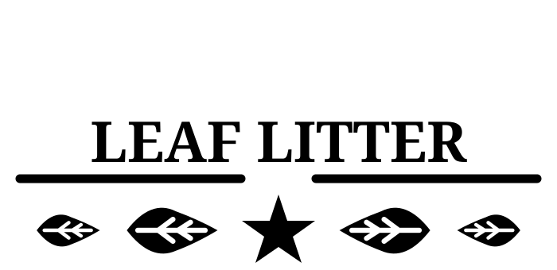

A place to tuck away
A layer of leaves creates small pockets of cover for your cleanup crew and adds natural texture to the enclosure.
Hand-collected in TexasFor the living terrarium

Texas live oak · Naturally fallen leaves · Bioactive habitats
Genuine Texas live oak
Hand-collected live oak leaf litter for bioactive terrariums, vivariums, and isopod cultures. Give your habitat a forest-floor finish.
Shop on Amazon New to leaf litter? Start here →See current sizes, pricing, reviews, and delivery options on Amazon.

Small leaves. A useful layer.
Leaf litter adds texture, cover, and organic material to a living enclosure.
A layer of leaves creates small pockets of cover for your cleanup crew and adds natural texture to the enclosure.
As leaves break down, they provide organic material for a bioactive setup. Match your leaf mix to the species you keep.
The shape and earthy tones of live oak leaves bring the look of a woodland floor into your habitat.

A layer with a purpose
From an isopod culture to a planted vivarium, leaf litter helps create a more varied ground layer.
Start with your animals’ needs. Keep ventilation, moisture, and access to food and water appropriate for the species in your care.
Read the setup guide →The leaf litter journal
Getting started
Preparation, placement, and ongoing care for a bioactive setup.
Explore the setup guide →Leaf selection
Explore live oak alongside other common leaf litter options.
Compare leaf types →Cleanup crew
Learn about leaf litter in an isopod culture.
Read the isopod guide →Before you order
Order through our Amazon listing. Check the listing for current package sizes, price, stock, shipping, and returns.
Leaf litter is commonly used in bioactive terrariums, vivariums, and isopod cultures. Choose materials and moisture conditions suited to your species.
Check your enclosure regularly and replenish as leaves break down. The timing depends on moisture, your cleanup crew, and the amount used.
From our neck of the woods
Current product details and delivery options are available on Amazon.